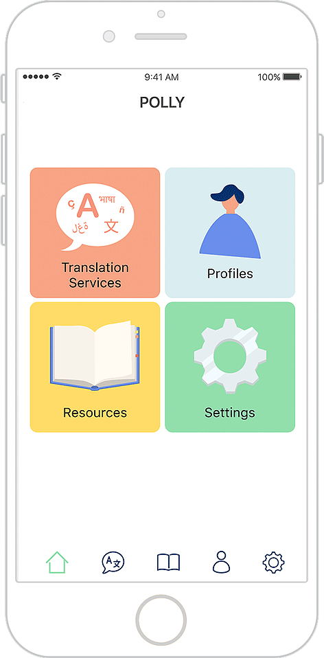
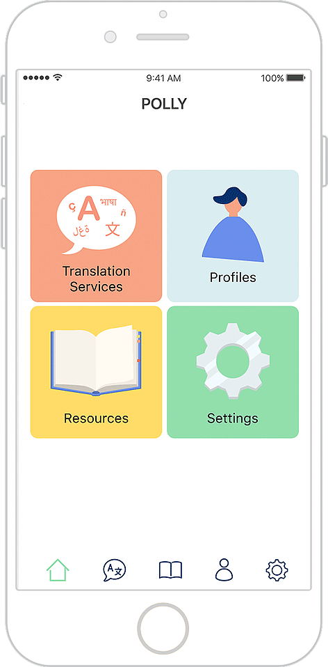
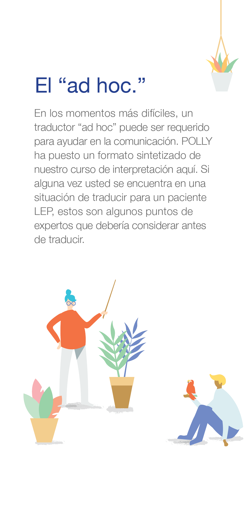
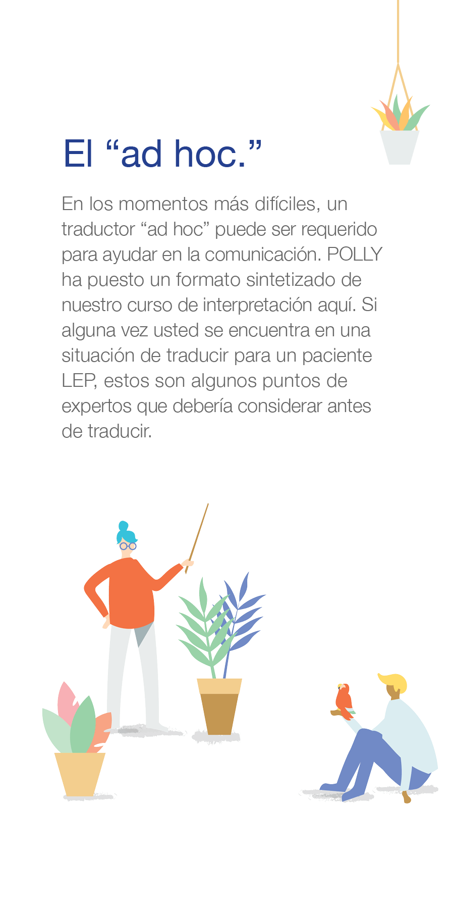

POLLY
Challenge
Inaccuracies in medical translation can lead to misinformed, dangerous decisions about a patient's health. Yet, patients often ask unqualified bilingual caretakers to step up as temporary or "ad hoc" translators in the place of professionals, due to logistical limitations or discomfort.
Outcome
POLLY is a service that facilitates communication between Low English Proficiency (LEP) patients and their doctors by providing interpretation training and resources.
Role & Contributions
User research
Brainstorming and concept ideation
Prototyping
Visual design
Teammates
Lily Kim (design)
Helen Kim (dev)
Sophie Zhao (dev)
Final Deliverables
 

Pocket Course
The pocket course is designed for the ad hoc interpreter. It aims to provide this user with professional training to bring attention to common errors and recommended best practices in medical translation. It is intended to be the initial touchpoint for users who are discovering POLLY, and available in many languages.
 


Mobile App
The mobile app offers POLLY's full services: Translation Services, Patient Profiles, and Resources. With these features, the app aims to support ad hocs in their role as caretaker and making their job easier, enabling them to request professional translators ahead of time, help translate more effectively, keep track of important information to share with doctors, and more.


Research
Ad Hoc Translator Interviews
From a niche scenario case of trying to translate a Korean word for "epilepsy" to English, we realized that common available tools like Google Translate did not have the cultural or technical sensitivity needed for high quality medical translation. In this regard, human translators are currently irreplaceable. Realizing that reliance on ad hoc translators is common in the medical field, we reached out to find out about different experiences people had as translators. We identified 3 key findings:
- Second generation children of immigrant parents often served older family members as translators, their ages ranging anywhere from 9 to 30.
- Federally funded centers are technically required to offer professional translation services, but many do not, as the laws are not enforced. As a result, many patients end up relying on ad hoc translators.
- There is a high correlation between LEP and at-risk status. "At-risk" refers to patients who are uninsured, undocumented, or of low-SES background.
Expert Interviews
Speaking to local health centers and hospitals helped us set us set realistic constraints and expectations for this project. We were able to see a bit into how healthcare works, and design with the existing system in mind.
- We talked to a diverse range of health centers who served communities with varying degrees of LEP visibility. For example, UPMC St. Margaret Bloomfield-Garfield Family Health Center serves a medically underserved area with many LEP and low-SES patients, so the doctors are knowledgable about immigrant needs and are well-equipped to serve patients in other languages.
- On the other hand, UPMC Aspinwall has a low visibility of LEP patients, but they have a higher elderly population and their patients struggle with health literacy. Here, we took away insights about addressing more general health literacy problems as well.
- Of all the health centers we talked to, the Squirrel Hill Health Center catered the most to LEP patients. Their multilingual staff provide primary and preventive healthcare and case management for immigrants of all ages who arrive in Pittsburgh, and they have a vast network of connections with other local services.
After our interviews, we synthesized our findings and soon realized that it was difficult to define a “typical” doctor’s visit due to the varying circumstances of our users.

Stakeholder Map
Initially, we placed the patient at the center of the map as the central stakeholder for whom the system is designed. However, as we developed further we felt that POLLY was really the component connecting all the stakeholders.

Service Blueprint
The service blueprint explores the interactions between the patient, their caretakers, doctors, pharmacists, specialists, and the POLLY system.

Process
Pocket Course Development
We reached out to professional translators to get a sense of their training and experience to build out this “crash course” of professional tips. Ultimately, following their guidelines and through additional research, we developed the content for our crash course. We have designed it in 4 languages so far.


App Development
We developed the app from paper prototypes to actual build. We designed as we researched and made changes continually. In the process, I helped define the app's function, research what features to design, create wireframes and mockup screens, write copy, and provide assets for our developers.


Learning Outcomes
We returned to SHHC to show our finished deliverables to the staff, who previously helped us with our research. They liked that the Pocket Course educates patients about their rights to language services, and they liked the app as a digital tool. However, we realized that this particular health center strongly opposes the use of an ad hoc translator, so they might appreciate more emphasis on the translation resources as the recommended route for LEP patients.
- Identifying a problem and its constraints, audience, physical context and assumptions through user research
- Navigating a problem space dealing with sensitive topics and "red tape" research
- Conducting research and using research-driven decisions to create iterative designs in parallel
- Creating a system with multiple touchpoints and integrates into existing hospital/healthcare services
Reflection
If we had time to develop POLLY further, I would love to investigate partnerships with existing medical translation services and Pittsburgh's healthcare infrastructure. It'd be interesting to learn how to culminate relationships with health and relocation centers to build a trusted network of resources for LEP clients. Additionally, throughout the course of the project we learned how diverse medical needs are in different geographic areas, so I would like to explore designing POLLY for more unique and localized needs.